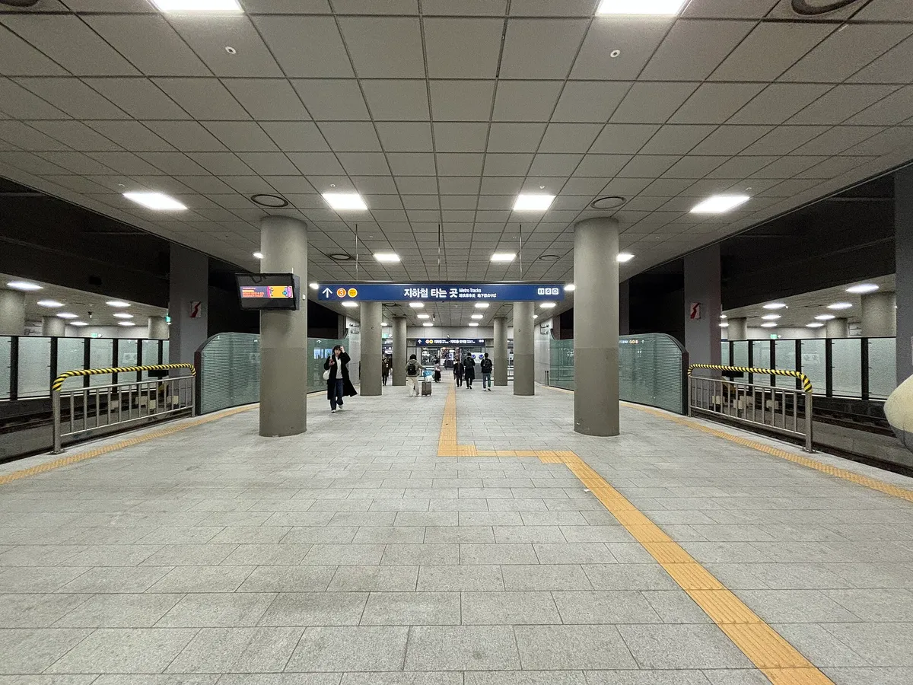
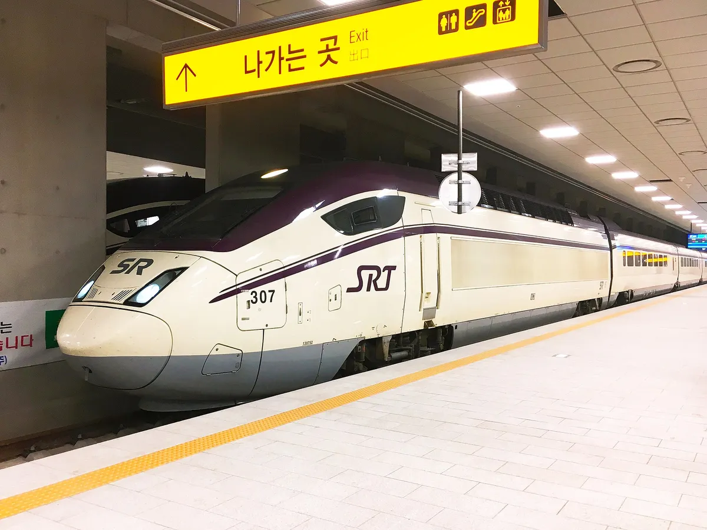
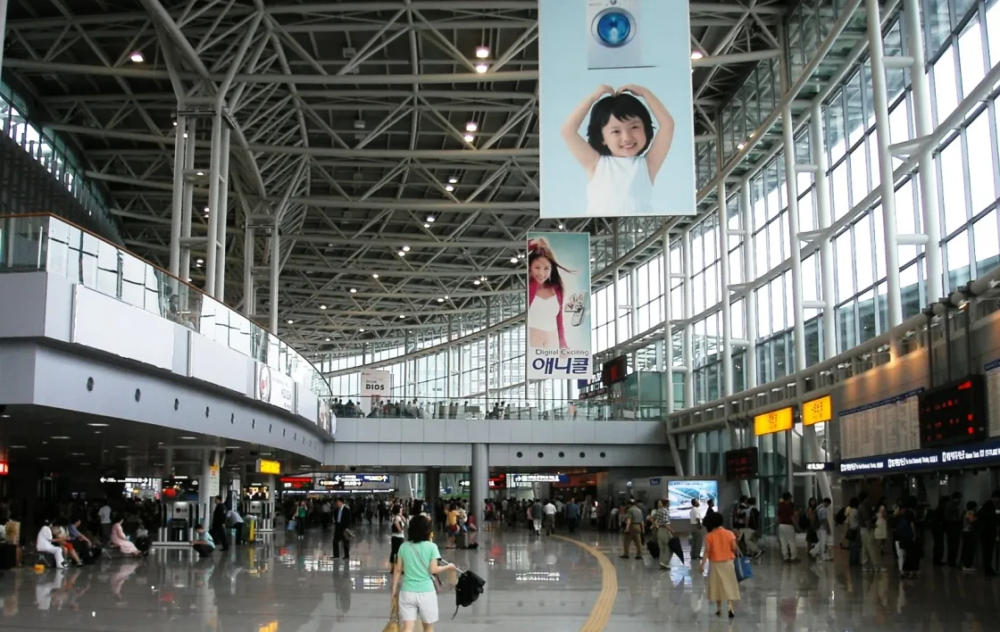
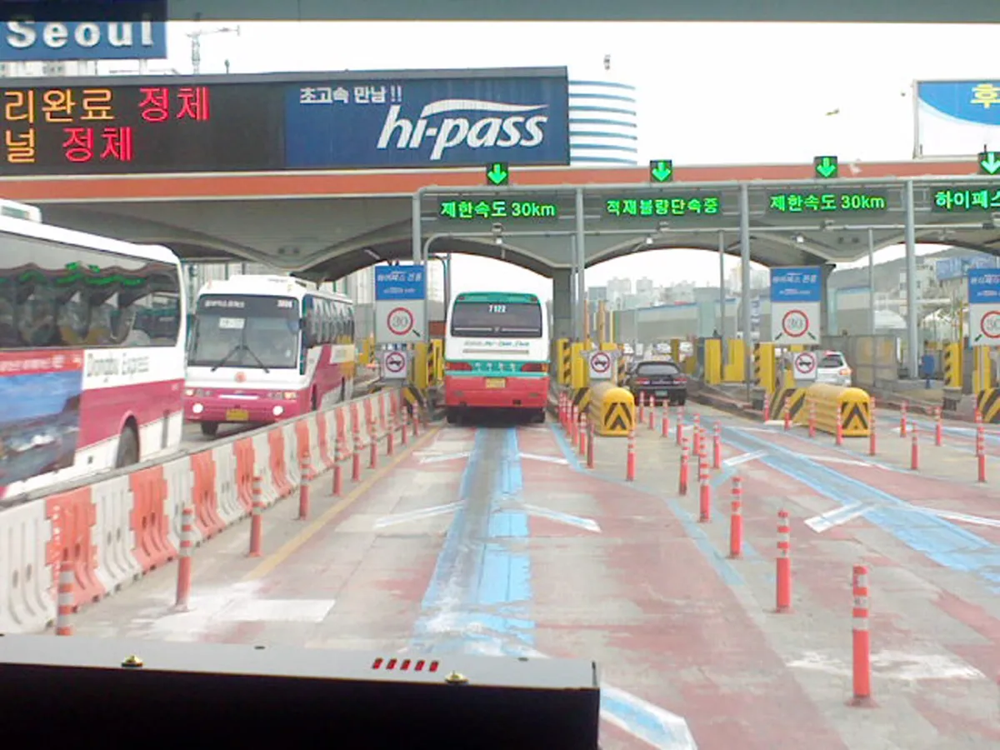

▲ 10월 1일부터 철도 승차권은 출발 2개월 전부터 예매할 수 있다 ⓒ Minseong Kim / Wikimedia Commons, CC BY-SA 4.0
10월 1일부터 기차표는 출발 2개월 전부터 살 수 있다. 국토교통부와 한국철도공사(코레일)는 지난 20일 철도 승차권 예매 기간을 기존 '출발 1개월 전'에서 '2개월 전'으로 늘린다고 밝혔고, 그 시행일이 바로 오늘이다. 외국인 관광객이 항공권을 2개월 전부터 사는데 기차표만 1개월 전에 열려 일정을 짜기 불편했다는 것이 정부의 설명이다.
자동차 사이트 독자에게는 다른 질문이 더 중요하다. 연말·설 이동을 기차로 미리 잡아야 할까, 아니면 그냥 내 차로 갈까? 바뀐 제도에서 확인된 사실과 아직 확인되지 않은 부분을 구분하고, 서울~부산 구간을 예로 직접 계산해 봤다.
1. 무엇이 어떻게 바뀌었나
뉴시스 보도에 따르면 국토교통부와 코레일은 10월 1일부터 철도 승차권 예매 기간을 출발 1개월 전에서 2개월 전으로 확대한다고 20일 밝혔다. 기존에는 열차 출발 1개월 전 오전 7시부터 예매할 수 있었고, 이제 같은 방식으로 2개월 전부터 열린다.
| 항목 | 내용 | 확인 상태 |
|---|---|---|
| 시행일 | 2026년 10월 1일 | 국토부·코레일 발표(뉴시스·파이낸셜뉴스 등 복수 보도) |
| 예매 기간 | 출발 1개월 전 → 2개월 전 | 복수 보도 일치 |
| 예매 시각 | 출발 2개월 전 오전 7시, 시행 첫날은 11/1~12/1 운행분을 10/1 오전 10시부터 | 코레일 보도자료 기반 보도(톱스타뉴스) |
| KTX·SRT | KTX·SRT 대상 | 매일신문 보도, 국토부 원문 확인 못 함 |
| ITX-새마을·무궁화 | MTN·뉴시스는 열차 종류를 명시하지 않음, 톱스타뉴스는 "KTX 등 일반열차"로 표기, 매일신문은 "아직 공개되지 않았다" | 확인 못 함 |
| 환불·위약금 | 이번 개편 발표에 변경 내용 없음 | 확인된 변경 없음 |
📍 날짜 계산은 이렇게 해보자 (추정)
시행 첫날 사례(10/1에 11/1~12/1분 오픈)를 기준으로 하면, 12월 25일(금) 표는 10월 25일 오전 7시, 12월 31일 표는 10월 31일 오전 7시에 열리는 구조로 보인다. 이는 발표된 규칙을 적용한 추정이며, 정확한 오픈일은 코레일톡·코레일+ 앱에서 확인해야 한다.

▲ SRT 수서역 승강장. 통합 이후 수서축 좌석이 통합 전보다 30% 늘었다(매일신문 보도) ⓒ MNXANL / Wikimedia Commons, CC BY-SA 4.0
국토부·코레일 발표의 배경과 외국인 대상 서비스 개선 내용은 뉴시스 기사에서 확인할 수 있다. 뉴시스 기사 바로가기
2. KTX·SRT는 이미 한 몸, 앱도 하나
매일신문에 따르면 국토부와 코레일은 9월 1일 KTX와 SRT 통합 운행을 시작하면서 운임을 SRT 기준으로 일원화했다. 서울~부산 일반실 편도 운임은 5만 9,800원에서 5만 4,400원으로 5,400원 내렸고, 고속철도 평균 운임은 종전 KTX 대비 10% 낮아졌다. 통합 앱 '코레일+'는 8월 3일 출시됐다. 아주경제도 같은 인하 수치를 보도했다.
| 구분 | 내용 |
|---|---|
| 운임 | SRT 기준 일원화, 서울~부산 일반실 59,800원 → 54,400원 |
| 좌석 공급 | 주중 약 1만 5천 석, 주말 약 1만 7천 석 증가 / 주말 운행 하루 26회 증가 |
| 수서축 | 통합 전보다 좌석 30% 증가 |
| 구매 한도 | 회원 1인 하루 20매, 한 열차당 10매 |
| 앱 | KTX·SRT 통합 앱 '코레일+'(8월 3일 출시) |

▲ KTX와 SRT는 9월 1일부터 통합 운행 중이다. 사진은 승강장의 SRT 열차 ⓒ jmk2765 / Wikimedia Commons, CC BY-SA 3.0
반면 같은 날 시행된 고속버스 운임 상한이 9% 올랐다(아주경제 보도). 기차는 내리고 버스는 오르는 시점에 예매 시기까지 빨라지면서, 장거리 대중교통의 중심이 기차 쪽으로 더 기우는 모양새다. 다만 이것이 실제 수요 변화로 이어질지는 이제 막 시행된 제도라 아직 알 수 없다.
3. 일찍 사면 취소 위약금은? — 바뀐 건 없다
두 달 전에 표를 사 두면 일정이 바뀔 가능성도 그만큼 커진다. 그런데 이번 발표에서 환불·위약금 규정 변경은 확인되지 않았다. 보도된 발표 내용에는 예매 기간 확대에 맞춘 위약금 개편이 언급되지 않았다. 즉 기존 규정이 그대로 적용된다고 보는 것이 안전하다.
코레일 모바일 위약금 안내 페이지에는 현재 추석 승차권(9/23~9/27) 기준표가 게시돼 있다.
| 시점 | 위약금 |
|---|---|
| 1개월 ~ 출발 2일 전 | 400원 (구매일 포함 7일 이내 환불 시 감면) |
| 출발 1일 전 | 5% |
| 출발 당일 ~ 3시간 전 | 10% |
| 3시간 경과 후 ~ 출발 전 | 20% |
| 출발 후 20분까지 | 30% |
| 출발 후 60분까지 | 40% |
| 도착 시간까지 | 70% |
✅ 평상시 승차권은 보도 기준으로만 확인했다
· 매일신문은 2026년 8월 코레일 안내 기준으로 주중 승차권은 출발 3시간 전까지 위약금이 없고, 금~일요일·공휴일 승차권은 출발 2일 전 취소 시 최저 400원이 붙는다고 전했다.
· 코레일은 2월부터 동일 구간 승차권을 출발 30분 전까지 위약금 없이 앞뒤 7일 이내 열차로 변경할 수 있게 했다고 한다(매일신문). 취소 후 재구매보다 변경이 유리하다.
· 위 두 가지는 코레일 공식 페이지에서 직접 확인하지 못했다. 예매 전 앱의 안내를 확인하자.
위약금 수치와 노쇼 현황은 아래 기사에서 정리돼 있다. 매일신문 기사 바로가기
4. '허수 예약' 우려와 예매 요령
두 달 전 예매의 부작용으로 거론되는 것이 선점 후 취소다. 매일신문이 인용한 한국철도공사 자료(국회 국토교통위원회 제출)에 따르면 2025년 설과 추석에 재판매되지 못하고 빈자리로 운행한 표가 66만 4천 장으로, 전년보다 22만 장 늘었다. 한 이용자가 2020년부터 지난해 8월까지 3만 800여 장을 사서 99.4%를 취소한 사례도 포함돼 있었다고 한다. 철도 이용자와 소비자 단체에서 예매 시점이 앞당겨지면 이런 허수 예약이 늘 수 있다는 우려가 나온다.
✅ 실전 예매 체크리스트 (확인된 내용만)
· 오픈 시각은 오전 7시, 예매 전에 코레일+ 앱 로그인과 결제수단을 미리 준비한다.
· 1인 하루 20매, 한 열차 10매까지라 일행 표를 한꺼번에 사는 데는 지장이 없다.
· 일정이 불확실하다면 취소보다 무료 변경(출발 30분 전, 앞뒤 7일)을 먼저 고려한다.
· 예매 알림이나 예약 대기 같은 기능이 이번 개편과 함께 바뀌었는지는 발표 자료에서 확인하지 못했다.
· 명절 승차권은 별도 일정으로 판매된다(추석 승차권은 별도 일정으로 먼저 판매됐다). 2개월 규칙이 명절 승차권에도 적용되는지, 2027년 설 판매 일정은 확인 못 함.

▲ 역 창구가 아닌 앱으로 예매하는 시대지만, 연말 성수기에는 오픈 시각을 놓치지 않는 것이 관건이다 ⓒ Bergmann from jawp / Wikimedia Commons, CC BY-SA 3.0
5. 서울~부산 자가용 vs KTX, 직접 계산해 봤다
연말 이동 계획을 세울 때 가장 현실적인 질문은 "몇 명이 가느냐"다. 서울~부산 구간을 예로 계산했다. 계산 가정은 다음과 같다.
| 항목 | 값 | 근거 |
|---|---|---|
| KTX 운임 | 1인 편도 54,400원(일반실) | 매일신문·아주경제 보도 |
| 주행거리 | 약 400km | 경부고속도로 서울~부산 구간 거리(2차 자료 기준 400~408km로 엇갈림, 가정. 408km로 계산하면 연료비 약 6.3만 원, 편도 약 9.1만 원으로 결론 불변) |
| 연비 | 12km/L | 가정(실제 차량·주행 조건에 따라 다름) |
| 휘발유 가격 | 리터당 1,858원 | 오피넷 기준 9월 4주(9/20~24) 전국 평균(서울경제 보도) |
| 통행료 | 27,600원(1종 승용차) | 2차 자료 수치이며 26,500~27,600원 범위로 엇갈리는 자료도 있고 하이패스 할인 가능성도 있다. 한국도로공사 1차 자료로는 확인 못 함 |
연료비는 400 ÷ 12 ≒ 33.3L × 1,858원 ≒ 6만 1,900원이고, 여기에 통행료 2만 7,600원을 더하면 편도 약 8만 9,500원이다. 인원별 편도 비용은 다음과 같다.
| 인원 | KTX(54,400원×인원) | 자가용(약 89,500원) | 유리한 쪽 |
|---|---|---|---|
| 1명 | 54,400원 | 약 89,500원 | KTX |
| 2명 | 108,800원 | 약 89,500원 | 자가용 |
| 3명 | 163,200원 | 약 89,500원 | 자가용 |
| 4명 | 217,600원 | 약 89,500원 | 자가용 |
손익분기점은 89,500 ÷ 54,400 ≒ 1.65명, 즉 2명부터 자가용이 싸다. 왕복이면 자가용 약 17만 9,100원, KTX 1인 10만 8,800원이다.
📍 숫자로 안 잡히는 변수
위 계산에는 서울 시내 이동·주차, 명절 정체로 인한 시간, 운전 피로가 들어 있지 않다. 반대로 KTX에는 역까지 오가는 교통비, 부산 도착 후 이동 수단 비용이 빠져 있다. 아이·시니어 할인이나 마일리지 적립도 반영하지 않았다.
▲ 경부고속도로 대전IC 요금소. 연말 귀성길 정체는 요금표에 안 나오는 비용이다 ⓒ LandAndTree / Wikimedia Commons, CC0
6. 기차+자가용 조합, 코레일 연계 주차 할인
집 근처 역까지 자가용으로 가서 기차를 타는 '파크앤레일'식 이동이나, 서울 도착 후 환승 용도로 역 인근 시설을 이용할 때는 주차비가 변수다. 용산역 아이파크몰은 KTX 승차권이 있으면 주차 할인이 적용되는 곳으로, 자세한 조건은 기존 기사에서 정리했다.
KTX 표만 있으면 주차비 반값, 앱 쿠폰까지 더하면 사실상 무료

▲ 서울요금소 하이패스 차로 ⓒ P.Cps1120a / Wikimedia Commons, CC BY-SA 3.0
7. 정리
철도 승차권은 10월 1일부터 출발 2개월 전 오전 7시부터 예매할 수 있다. 시행 첫날에는 11월 1일~12월 1일 운행분이 오전 10시에 열렸다. KTX·SRT는 대상으로 보도됐지만 ITX·무궁화 등 일반열차 적용은 공식 확인 못 했다.
환불·위약금 개편은 이번에 확인되지 않았다. 일찍 예매할수록 일정 변경 가능성이 커지므로, 취소보다 출발 30분 전까지 가능한 무료 변경(보도 기준)을 활용하는 편이 낫다.
서울~부산 가정 계산(연비 12km/L, 휘발유 1,858원, 통행료 27,600원)으로는 1명이면 KTX, 2명 이상이면 자가용이 싸다. 다만 통행료는 1차 자료 확인이 필요하고 시간·피로·주차비는 별개다. 연말 일정이 확정되면 오픈 시각에 맞춰 앱을 켜 두자.